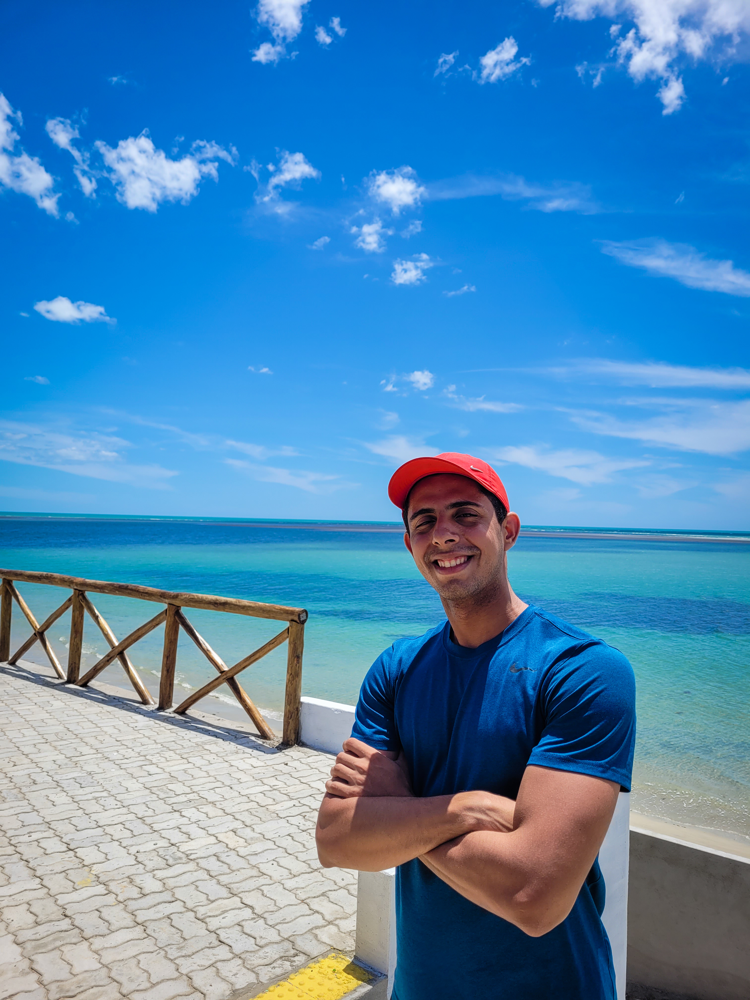

Olá! Me chamo Felipe e este é o meu perfil. Atualmente estou no 2º período do curso Tecnólogo em Análise e desenvolvimento de sistemas. Cursava o 4° período de Engenharia Elétrica na Ufrpe e não me sentia satisfeito no curso e então, decidi mudar de área e não me arrependo. Possuo conhecimentos em HTML, CSS, Bootstrap e Javascript. https://github.com/felipealvesdev

Uma breve descrição sobre mim: Já morei nos Estados Unidos quando tinha 16 anos. Pude jogar no time de tênis da escola onde ganhei uma medalha de quarto lugar em um torneio. Após meu intercâmbio, fui convidado para dar aula de inglês por dois anos. Já fiz curso técnico em redes de computadores. Já estudei Engenharia Elétrica na federal mas não gostei. Decidi voltar para a área de tecnologia.